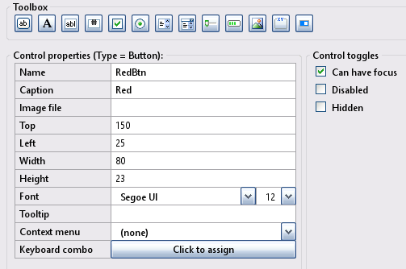
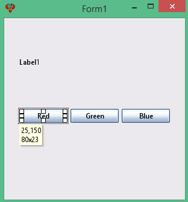

Toolbox button
When a button is clicked in an InForm application, it triggers an on-click event. This page covers buttons in more detail.
Button control
Create a new Button control by clicking the Button icon in the Toolbox. The newly created control will be displayed in the preview window; allowing you to move it around to meet your design requirements. Edit the Button properties as necessary.
1) Button Properties:
Button example: Preview window.
Note: Button properties will reflect the highlighted control selected in the preview window, enabling you to customize it as needed.
Button example
Specification: Let the button example have the following design specification:
- Red button click: Set the label text to "Red clicked"
- Green button hover: Concatenate the left and right button caption text.
- Blue button hover: Set label text to "Hover Blue Button"
Implimenation: The following provide solutions for the above:
- Button click uses the subroutine __UI_Click .
- Button hover uses the subroutine __UI_MouseEnter.
- User feedback is provided by setting a label caption: Caption(Label1) = "some text"
- For additional details, check out ButtonTest.bas
- At the layout stage, save the project using file -> Save project as and enter the name ButtonTest.
Basic file ButtonTest.bas
': This program uses
': InForm - GUI library for QB64 - v1.5
': Fellippe Heitor, 2016-2024 - fellippe@qb64.org - @fellippeheitor
': https://github.com/FellippeHeitor/InForm
'-----------------------------------------------------------
': Controls' IDs: ------------------------------------------------------------------
Dim Shared Form1 As Long
Dim Shared RedBtn As Long
Dim Shared GreenBtn As Long
Dim Shared BlueBtn As Long
Dim Shared Label1 As Long
': External modules: ---------------------------------------------------------------
'$INCLUDE:'InForm\InForm.bi'
'$INCLUDE:'InForm\xp.uitheme'
'$INCLUDE:'ButtonTest.frm'
': Event procedures: ---------------------------------------------------------------
Sub __UI_BeforeInit
End Sub
Sub __UI_OnLoad
End Sub
Sub __UI_BeforeUpdateDisplay
'This event occurs at approximately 60 frames per second.
'You can change the update frequency by calling SetFrameRate DesiredRate%
End Sub
Sub __UI_BeforeUnload
'If you set __UI_UnloadSignal = False here you can
'cancel the user's request to close.
End Sub
Sub __UI_Click (id As Long)
Select Case id
Case Form1
Case RedBtn
Caption(Label1) = "Red clicked" '<---
Case GreenBtn
Case BlueBtn
Case Label1
End Select
End Sub
Sub __UI_MouseEnter (id As Long)
Select Case id
Case Form1
Case RedBtn
Case GreenBtn
Caption(Label1) = Caption(RedBtn) + Caption(BlueBtn) '<---
Case BlueBtn
Caption(Label1) = "Hover Blue Button" ' <---
Case Label1
End Select
End Sub
Sub __UI_MouseLeave (id As Long)
Select Case id
Case Form1
Case RedBtn
Case GreenBtn
Case BlueBtn
Case Label1
End Select
End Sub
Sub __UI_FocusIn (id As Long)
Select Case id
Case RedBtn
Case GreenBtn
Case BlueBtn
End Select
End Sub
Sub __UI_FocusOut (id As Long)
'This event occurs right before a control loses focus.
'To prevent a control from losing focus, set __UI_KeepFocus = True below.
Select Case id
Case RedBtn
Case GreenBtn
Case BlueBtn
End Select
End Sub
Sub __UI_MouseDown (id As Long)
Select Case id
Case Form1
Case RedBtn
Case GreenBtn
Case BlueBtn
Case Label1
End Select
End Sub
Sub __UI_MouseUp (id As Long)
Select Case id
Case Form1
Case RedBtn
Case GreenBtn
Case BlueBtn
Case Label1
End Select
End Sub
Sub __UI_KeyPress (id As Long)
'When this event is fired, __UI_KeyHit will contain the code of the key hit.
'You can change it and even cancel it by making it = 0
Select Case id
Case RedBtn
Case GreenBtn
Case BlueBtn
End Select
End Sub
Sub __UI_TextChanged (id As Long)
Select Case id
End Select
End Sub
Sub __UI_ValueChanged (id As Long)
Select Case id
End Select
End Sub
Sub __UI_FormResized
End Sub
'$INCLUDE:'InForm/InForm.ui'
Form file ButtonTest.frm
': This form was generated by
': InForm - GUI library for QB64 - v1.5
': Fellippe Heitor, 2016-2024 - fellippe@qb64.org - @fellippeheitor
': https://github.com/FellippeHeitor/InForm
'-----------------------------------------------------------
SUB __UI_LoadForm
DIM __UI_NewID AS LONG, __UI_RegisterResult AS LONG
__UI_NewID = __UI_NewControl(__UI_Type_Form, "Form1", 300, 300, 0, 0, 0)
__UI_RegisterResult = 0
SetCaption __UI_NewID, "Form1"
Control(__UI_NewID).Font = SetFont("segoeui.ttf", 12)
Control(__UI_NewID).HasBorder = False
__UI_NewID = __UI_NewControl(__UI_Type_Button, "RedBtn", 80, 23, 25, 150, 0)
__UI_RegisterResult = 0
SetCaption __UI_NewID, "Red"
Control(__UI_NewID).HasBorder = False
Control(__UI_NewID).CanHaveFocus = True
__UI_NewID = __UI_NewControl(__UI_Type_Button, "GreenBtn", 80, 23, 110, 150, 0)
__UI_RegisterResult = 0
SetCaption __UI_NewID, "Green"
Control(__UI_NewID).HasBorder = False
Control(__UI_NewID).CanHaveFocus = True
__UI_NewID = __UI_NewControl(__UI_Type_Button, "BlueBtn", 80, 23, 195, 150, 0)
__UI_RegisterResult = 0
SetCaption __UI_NewID, "Blue"
Control(__UI_NewID).HasBorder = False
Control(__UI_NewID).CanHaveFocus = True
__UI_NewID = __UI_NewControl(__UI_Type_Label, "Label1", 150, 23, 25, 61, 0)
__UI_RegisterResult = 0
SetCaption __UI_NewID, "Label1"
Control(__UI_NewID).HasBorder = False
Control(__UI_NewID).VAlign = __UI_Middle
END SUB
SUB __UI_AssignIDs
Form1 = __UI_GetID("Form1")
RedBtn = __UI_GetID("RedBtn")
GreenBtn = __UI_GetID("GreenBtn")
BlueBtn = __UI_GetID("BlueBtn")
Label1 = __UI_GetID("Label1")
END SUB